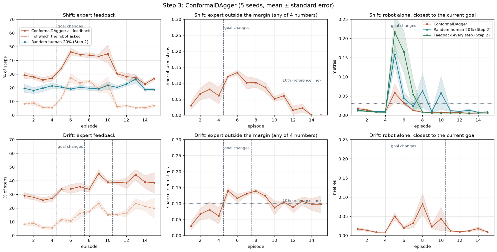

Step 3 · iqt.py, conformal_dagger.py
The margin, how it learns, and when to ask
This is the paper's contribution. The robot puts a margin around each action it predicts. Every time the expert's real action is seen, the margin is nudged: wider after a miss, a little narrower after a hit. The trick is doing this correctly when the expert's action is seen only now and then. When the margin is wide, the robot asks.
1
The margin
An interval around the robot's predicted action, with its own lower and upper distance.
margin C_t = [ a_r − q_lo , a_r + q_hi ] (for each of the 4 action numbers)
The two distances qlo and qhi are learned separately, because errors are often one-sided. After a shift to the right goal, the expert's y is always below the robot's y, so only the lower side needs to grow.
Worked example (the y number only)
robot predicts a_r = 0.035 current distances q_lo = 0.004, q_hi = 0.004 margin [0.031, 0.039] expert's real action a_h = 0.025 → outside, below the margin: a miss on the lower side
To judge hits and misses, the paper uses two scores (signed errors):
s_hi = a_h − a_r (how far the expert is above the robot) miss on top if s_hi > q_hi s_lo = a_r − a_h (how far the expert is below the robot) miss on bottom if s_lo > q_lo
In the example: slo = 0.035 − 0.025 = 0.010 > 0.004 → a miss below. shi = −0.010 < 0.004 → no miss above.
2
Nudging the margin when every answer is seen
Quantile tracking: a simple rule that ends up wrong exactly 10% of the time.
q ← q + γ · (err − α) err = 1 if a miss, 0 if a hit; α = allowed miss rate
After a miss (err = 1)
q grows by γ·(1 − α). With α = 0.05 that is 0.95 γ: a big step up.
After a hit (err = 0)
q shrinks by γ·α = 0.05 γ: a small step down.
Why this lands on the right miss rate: the margin stops moving on average only when the big steps up balance the small steps down. That happens when misses make up exactly α of the answers: 0.05 × 0.95 = 0.95 × 0.05. If the world changes and misses become common, the margin grows until they are rare again. No model of the error is needed, and this holds for any sequence of data (that is the conformal guarantee).
The paper aims for 90% coverage overall. With two sides, I give each side α = 0.05.
3
IQT: when answers come only sometimes
Update only when the expert's action is seen, and divide the step by the chance that it was seen.
if feedback seen (obs = 1): q ← q + (γ / p) · (err − α) if not seen (obs = 0): q ← q (err is unknown, so do nothing) p = probability that feedback would be seen at this step (known to the robot)
Why divide by p?
Feedback is not random. The robot asks more when its margin is wide, and a wide margin is less likely to miss. So the answers it sees are biased toward hits. If we just updated on them as usual, the margin would shrink too much and miss more than 10% of the time overall.
Dividing by p fixes this, the same way a survey reweights groups it under-samples. An answer that had only a 20% chance of being seen stands in for about 5 unseen steps, so it moves the margin 5 times as much. An answer that was almost certain to be seen (the robot asked) counts about once. On average over many steps, the update then matches the "every answer seen" rule, so the 10% guarantee survives (the paper's Proposition 1).
Worked example
Lower side, qlo = 0.004, step size γ = 0.006, α = 0.05.
A. Human stepped in by chance (p = 0.2) and it was a MISS: q_lo ← 0.004 + (0.006 / 0.2) · (1 − 0.05) = 0.004 + 0.0285 = 0.0325 B. Robot asked because it was unsure (p = 0.9) and it was a MISS: q_lo ← 0.004 + (0.006 / 0.9) · (1 − 0.05) = 0.004 + 0.0063 = 0.0103 C. Human stepped in by chance (p = 0.2) and it was a HIT: q_lo ← 0.004 + (0.006 / 0.2) · (0 − 0.05) = 0.004 − 0.0015 = 0.0025 D. No feedback at this step: q_lo ← 0.004 (unchanged)
Case A is the important one: a surprise miss, seen only by luck, is strong evidence that many unseen steps were also misses, so the margin jumps.
4
How big each nudge is
The step size follows the size of recent errors.
γ_t = lr · B̂_t B̂_t = largest score among the last k seen answers paper (simulation): lr = 0.6, k = 100, starting margin q_0 = 0.01
If recent errors are around 0.01, steps are around 0.006; if errors become ten times bigger after a shift, steps grow too, so the margin can catch up quickly. The paper reports this worked better than a fixed γ.
The paper names two versions. IQT-pd uses γ = lr·B̂ and divides by p as above. IQT-pi uses γ = lr·B̂·p, so the p cancels and every seen answer moves the margin equally. I will implement both and use IQT-pd as the main one.
5
Live demo: IQT vs a naive version
One action number over 600 steps. The expert changes its mind at step 300, and the robot slowly catches up.
The dots are the error ah − ar at each step. Before step 300 the robot is nearly right; after it, the expert wants something else and the error jumps, then fades as retraining catches up. Both margins see exactly the same answers when the robot does not ask; with asking on, each margin decides for itself when to ask.
Things to try (single runs vary a lot, so press Average 200 runs): (1) With the default settings, the naive margin trusts the answers it asked for, shrinks too far, asks less, and ends up outside more often than IQT (about 11% vs 9% over 200 runs). (2) Turn asking off: feedback is then purely random and both versions end up close. (3) Lower lr to 0.1: smaller steps, both margins become steadier but slower to react to the change. This is a toy stream for one action number, not the real robot; the real numbers come in Step 4.
6
When the robot asks
The wider the margin, the more likely it asks; above τ it almost always does.
u = size of the margin (length of the vector of the 4 widths q_lo + q_hi) P(ask) = sigmoid( β · (u − τ) ) paper: τ = 0.06, β = 100 P(feedback) = p = c + P(ask) − c · P(ask) (either the human steps in, or the robot asks, or both)
Worked example
widths of the 4 numbers: x 0.020, y 0.050, z 0.008, gripper 0.004 u = √(0.020² + 0.050² + 0.008² + 0.004²) = 0.0546 P(ask) = sigmoid(100 · (0.0546 − 0.06)) = sigmoid(−0.54) = 0.37 p = 0.2 + 0.37 − 0.2 · 0.37 = 0.496 ← this p goes into the IQT update
A soft rule (β = 100) is used in simulation; on the real robot the paper used a hard threshold (ask if u > 0.07). The paper's sensitivity test: with τ = 0.03 both methods ask 70–80% of the time even at the start; with τ = 0.18 or more, ConformalDAgger stops asking.
7
ConformalDAgger, all together
Step 2's loop, with the "WHEN?" filled in.
for each episode:
q_lo = q_hi = 0.01 ← reset each episode (Algorithm 1)
for each step:
a_r = policy(x)
u = size of [a_r − q_lo, a_r + q_hi]
ask = random() < sigmoid(β · (u − τ))
human = random() < c
p = c + P(ask) − c · P(ask)
if ask or human:
a_h = expert(x)
for each side: err = (score > q); q ← q + (γ / p) · (err − α)
save (x, a_h); move to a_h
else:
move to a_r ← q unchanged
retrain policy on the buffer
8
Things to check in the paper while coding
Small inconsistencies I noticed while reading. Each will be tested, not guessed.
| Point | What the paper writes | What I will do |
|---|---|---|
| Miss test | err = (s < q) | Tested. As printed, the margin grows to a size of 0.24 and never misses (0%). With err = (s > q) it behaves as intended (misses 2%, size 0.036). So the printed version is a typo; I use s > q. |
| Margin size u | "L2 norm of the interval"; also written with xt+1 in one place | Length of the width vector at the current step. |
| Reset of q | Algorithm 1 resets q to 0.01 every episode | Tested. Followed. With the reset, misses per number are 2%; without it, 5% (target 10%). See section 9. |
| Noise in demos | N(1, 0.5) | Gaussian push, sd 0.003 (Step 2). |
9
First results (17 Nov 2026)
iqt.py, conformal_dagger.py and check_step3.py: 4 settings × 5 seeds in 3 minutes. All checks pass.
| Check | Result |
|---|---|
| The worked examples A–D in section 3 | ✓ 0.0325, 0.0103, 0.0025, 0.004, exactly as above |
| Miss-sign test (stationary, robot not asking) | ✓ s > q is right; the printed s < q never misses and the margin balloons |

plot_step3.py from results/step3.json (and Step 2's references in the top-right chart).What it shows
- It notices the shift and asks more. Before the change the robot itself asks on about 6–9% of steps (all feedback about 28%, mostly the random human). After the change, its own questions rise to 27% in episode 6 (all feedback 46%), stay high while it relearns, and drop back to about 6% by episode 11.
- It relearns faster and more steadily than random feedback. Robot alone, closest to the new goal: 0.058 m in episode 5, 0.031 in 6, 0.012 in 7, then steady. Random 20% feedback: 0.159, 0.044, then swings back to 0.06 in episodes 8 and 10.
- It even beats feedback at every step here (0.217 and 0.165 in episodes 5–6). Reason: when the expert acts at every step, the robot never drives itself, so it only ever sees the expert's perfect path, where old and new examples start from the same states and contradict each other. Mixed control lets it visit its own states, which is the point of DAgger.
- Drift: the robot asks more after each change (episodes 5, 8, 11), and its misses hover near 10%, as the paper describes.
Compared with the paper
| Paper (shift) | This rebuild | |
|---|---|---|
| Feedback before the change | about 20% | about 28% (human 20% + robot 6–9%) |
| Feedback at the change | about 60% (episode 5) | 34% in episode 5, peak 46% in episode 6 |
| Misses at the change | peak about 0.4, settling at 0.2 | peak 0.13, settling to near 0 |
Same pattern, smaller and one episode later. My margins are wider (more cautious) than the paper's: misses are only 2% per number when nothing changes, against a 10% target. The side check shows why: the margin restarts at 0.01 every episode (Algorithm 1), which is wider than the robot's usual error (about 0.002), and it shrinks only a little at each seen step (by 0.05 × γ / p). With about 25 seen steps per episode it never shrinks fully. Without the reset, misses rise to 5%. Wider margins hide a small shift at first, so the jump in asking is smaller and comes in episode 6. In Step 4 I will test a smaller starting margin and see whether the numbers move toward the paper's.